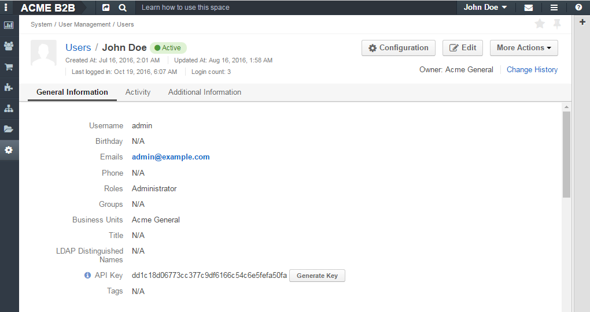
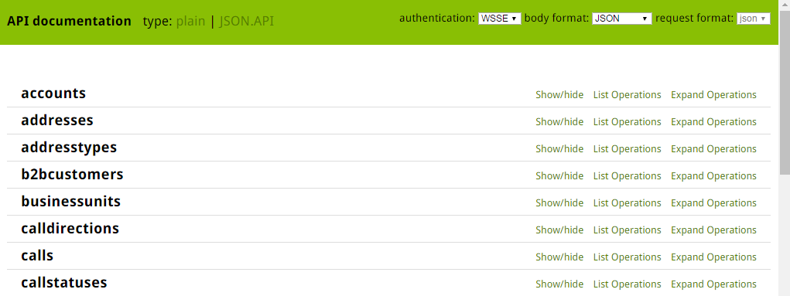
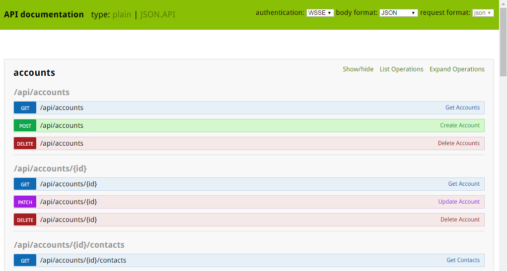
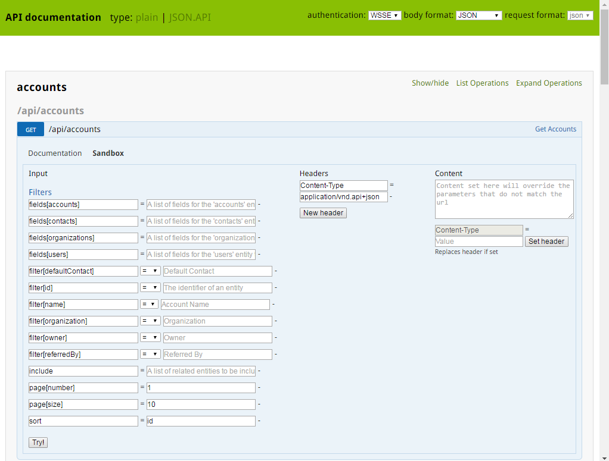
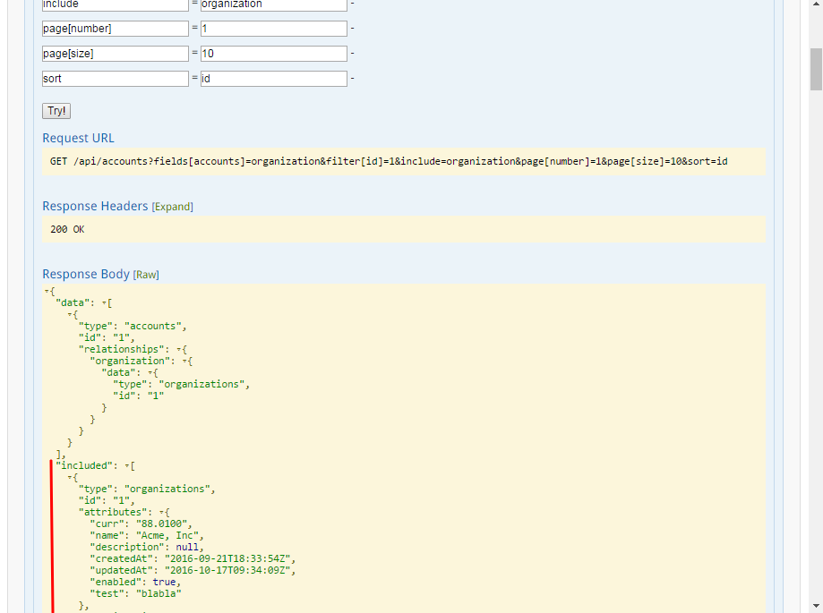

Web Services API¶
OroCommerce REST API enables developers to integrate Oro functionality into third party software systems.
- Overview
- Quick Start
- API in Detail
- Schema
- Authentication
- HTTP Methods Available in Oro API
- HTTP Header Specifics
- Response Status Codes and Errors
- Resource Fields
- Filters
- Create and Update Related Resources Together with a Primary API Resource
- Data API Client Requirements
Overview¶
An application programming interface (API) is a software interface which is designed to be used by other software for integration with this application. Whilst an ordinary software program is used by a (human) computer user, an API is a software program used by another software program.
The Representational State Transfer (REST) architectural style is an abstraction of the architectural elements within a distributed hypermedia system. REST ignores the details of component implementation and protocol syntax in order to focus on the roles of the components, the constraints on their interaction with other components, and their interpretation of significant data elements. It encompasses the fundamental constraints on components, connectors, and data that define the basis of the Web architecture, and thus the essence of its behavior as a network-based application.
JSON API is a specification for how a client should request those resources to be fetched or modified, and how a server should respond to them. It is designed to minimize both the number of requests and the amount of data transmitted between the clients and the servers. This efficiency is achieved without compromising on readability, flexibility or discoverability.
Therefore, here and below the term API will refer to the REST JSON API that gives programmatic access to read and write data. Request and response body should use JSON format.
Quick Start¶
Create an API Key¶
To start using the API, you must take a few preliminary steps:

Ensure that the application is installed correctly.
Generate an API key for a user:
If you want to generate an API key for yourself, navigate to the profile page of your user:
- Either click the My User link in the User Menu in the upper-right corner of the current page, or
- Follow the direct link, e.g.
http://<hostname_of_your_oro_application>/user/profile/view.If you want to generate an API key for another user:
- Open their view page.
- Open the Users grid (System –> User Management –> Users).
- Find the user who needs an API key.
- Click the corresponding grid row or the View icon in the ellipsis menu at the right end of the row.
Click the Generate Key button. You will see the generated key near the button, it will look like: ‘dd1c18d06773cc377c9df6166c54c6e5fefa50fa’.
For more details about how to generate an API Key and authentication header, please see the How to use WSSE authentication topic.
Important
Please note that an API key will be generated in the scope of the current organization and will allow you to access data in the scope of that particular organization only.
After the API key is generated, you will be able to execute API requests via the sandbox, Curl command, any other REST client or use the API via your own application.
API Sandbox¶
The API sandbox page allows you to perform API requests directly from the Oro application instance.
How to Use the Sandbox¶
The sandbox page for OroCommerce is available at: http://<hostname_of_your_oro_application>/admin/api/doc, unlike in OroCRM.
This page represents a list of plain API resources. Plain API resources are old API implementations based on FOSRestBundle.
To switch to the JSON API sandbox, go to the http://<hostname_of_your_oro_application>/admin/api/doc/rest_json_api page, or click the JSON.API
link in the upper left-hand corner of the sandbox page.
On the JSON.API sandbox page you will see the list of available resources.
To review available methods for the resource, click the resource row or the List Operations link at the right-hand end of the row. You will see the list of available methods grouped in blocks by the resource URI.
There is a documentation on how a method can be used with different resource URIs and there is a sandbox which contains a form that can be used to perform API requests. To review the documentation and access the sandbox, click the method row for a specific resource URI. You will see the corresponding tabs in the expanded area.
To expand information about all methods available for the resource, click the Expand Operations link at the right-hand end of resource row.
To switch between the collapsed list of available resources and the expanded state, click the Show / hide link at the right-hand end of the row.
Examples¶
Retrieve a Single Record¶
To retrieve a single record for a particular resource record with JSON API, perform the GET method with the id parameter specified:
- Click the API resource row on the
http://<hostname_of_your_oro_application>/admin/api/doc/rest_json_apipage to expand the methods block.- Find the /api/your_resource/{id} block.
- Click the GET method row.
- Click the Sandbox tab. You will see the request form.
- If you want to retrieve a single record, specify the record id for the id field in the Requirements section.
- Click the Try! button to send the request to the server.
As soon as the response from the server is received, the Request URL, Response Headers, Response Body and Curl Command Line sections will appear at the bottom of the Sandbox tab.
The Request URL block contains the request URL sent to the server.
The Response Headers block contains the status code of the server’s response. If the request is successful, it contains the ‘200 OK’ string. To see the list of headers which the server sent in the response, click the Expand link next to the section header .
If the request is successful, you should see the output data of the request in the Response Body section. In the given case, entity data will be in JSON format. More information about this format can be found on the JSON API site.
The Curl Command Line section contains an example of the CLI command to perform the request with Curl. This command may help emulate the real request to the API.
Important
When performing Curl requests, please make sure your X-WSSE header is up to date for each request.
Edit a record¶
To edit a record for a particular resource record with JSON API, perform the PATCH method with the id parameter specified:
Click the API resource row on the
http://<hostname_of_your_oro_application>/admin/api/doc/rest_json_apipage to expand the method block.Find the /api/your_resource/{id} block.
Click the PATCH method row.
Click the Sandbox tab. You will see the request form.
If you want to edit a single record, in the Requirements section, in the id field, specify the record id.
In the Content section, specify how the resource how a resource currently residing on the server should be modified to produce a new version.
For example, if you want to change the firstName field to ‘John’ value for a User entity with id 1, the request content will look the following way:
{ "data": { "type": "users", "id": "1", "attributes": { "firstName": "John", } } }Click the Try! button to send the request to the server.
Provided you have the edit permission to the record, you will see the updated data in the Response Body section after the response from the server is received.
API in Detail¶
Schema¶
All API access is over HTTP or HTTPS (depending on a server configuration) and is accessed from the http(s)://<hostname_of_your_oro_application>/api/<resource_name>
All data is sent and received as JSON.
A typical request can be performed via curl or via the JSON sandbox.
Curl Example¶
GET /api/users/1 HTTP/1.1
curl -X "GET" -H "Content-Type: application/vnd.api+json"
-H "Authorization: WSSE profile='UsernameToken'"
-H "X-WSSE: UsernameToken Username='admin',
PasswordDigest='D5AjIiPf7edQX2EX8hLwtB3XhQY=',
Created='2016-09-19T20:00:00+03:00',
Nonce='N2hlMDc3TGcrVU53bGprNlQ0YXliLy9PSEFNPQ=='"
http://localhost.com/api/users/1
Please note that to simplify representation of request examples in the document, a short format will be used, e.g.:
GET /api/users/1 HTTP/1.1
Host: localhost.com
Content-Type: application/vnd.api+json
Authorization: WSSE profile='UsernameToken'
X-WSSE: UsernameToken Username='...', PasswordDigest='...', Created='...', Nonce='...'
Typical response header
HTTP/1.1 200 OK
Server: Apache/2.4.18 (Unix) PHP/5.5.38
Date: Mon, 19 Sep 2016 17:52:34 GMT
Content-Type: application/vnd.api+json
Connection: keep-alive
Status: 200 OK
Content-Length: 5279
Cache-Control: max-age=0, no-store
Typical response body
{ "data": {
"type": "users",
"id": "1",
"attributes": {
"title": null,
"email": "admin@local.com",
"firstName": "John",
"enabled": true,
"lastLogin": "2016-09-19T11:01:31Z",
},
"relationships": {
"owner": { "data": { "type": "businessunits", "id": "1"} },
"businessUnits": { "data": [ { "type": "businessunits", "id": "1" } ] },
}
}}
Blank fields are included as null instead of being omitted.
Attributes or sub resources that are restricted are included as null as well.
All timestamps are returned in ISO 8601 format: YYYY-MM-DDTHH:MM:SSZ.
Authentication¶
A RESTful API should be stateless. This means that request authentication should not depend on cookies or sessions. Instead, each request should come with some authentication credentials.
For authentication purposes, the WSSE mechanism is used—a family of open security specifications for web services, specifically SOAP web services. The basic premise of WSSE is that a request header is checked for encrypted credentials, verified using a timestamp and nonce, and authenticated for the requested user using a password digest.
It’s based on the EscapeWSSEAuthenticationBundle that covers most cases from the WSSE specification (PDF).
Here’s an example of a request header with the WSSE authentication. Please pay attention to the Authentication and X-WSSE parameters:
GET /api/users HTTP/1.1
Host: localhost.com
Connection: keep-alive
User-Agent: Mozilla/5.0 ...
Connection: keep-alive
Accept: */*
Content-Type: application/vnd.api+json
Authorization: WSSE profile="UsernameToken"
X-WSSE: UsernameToken Username="admin",
PasswordDigest="Cae37DaU9JT1pwoaG5i7bXbDBo0=",
Created="2016-09-20T10:00:00+03:00",
Nonce="elRZL0lVOTl2T3lXeVBmUHRCL2ZrUnJoWUNZPQ=="
For more details about WSSE authentication and particularly for how to generate an API Key and authentication header, please see the How to use WSSE authentication topic.
HTTP Methods Available in Oro API¶
The primary or most commonly-used HTTP methods are POST, GET, PUT, PATCH, and DELETE. These correspond to create, read, update, and delete (or CRUD) operations, respectively. There are a number of other methods, too, but they are utilized less frequently.
Below is a table summarizing HTTP methods available in Oro API and their return values in combination with the resource URIs:
| HTTP Method | CRUD operation | Entire Collection (e.g. /users) | Specific Item (e.g. /users/{id}) |
|---|---|---|---|
| GET | Read | 200 (OK), list of entities. Use pagination, sorting and filtering to navigate big lists. | 200 (OK), single entity. 404 (Not Found), if ID not found or invalid. |
| POST | Create | 201 (Created), Response contains response similar to GET /user/{id} containing new ID. | not applicable |
| PATCH | Update | not applicable | 200 (OK) or 204 (No Content). 404 (Not Found), if ID not found or invalid. |
| DELETE | Delete | 200(OK) or 403(Forbidden) or 400(Bad Request) if no filter is specified. | 200 (OK). 404 (Not Found), if ID not found or invalid. |
| PUT | Update/Replace | not implemented | not implemented |
Also, the HTTP methods can be classified by the idempotent and safe properties.
The safe methods are the HTTP methods that do not modify resources. For instance, using GET or HEAD on a resource URL, should NEVER change the resource.
An idempotent HTTP method is an HTTP method that can be called many times without different outcomes. It would not matter if the method is called only once, or ten times over. The result should be the same. For more details, please see RFC 7231: Common Method Properties.
Below is a table summarizing HTTP methods by its idempotency and safety:
| HTTP Method | Idempotent | Safe |
|---|---|---|
| OPTIONS | yes | yes |
| GET | yes | yes |
| HEAD | yes | yes |
| PUT | yes | no |
| POST | no | no |
| DELETE | yes | no |
| PATCH | no | no |
GET¶
The HTTP GET method is used to read (or retrieve) a representation of a resource. In case of success (or non-error), GET returns a representation in JSON and an HTTP response status code of 200 (OK). In an error case, it most often returns a 404 (NOT FOUND) or 400 (BAD REQUEST).
Note
According to the design of the HTTP specification, GET requests are used only to read data and not change it. So, they are considered safe. That is, they can be called without risk of data modification or corruption—calling it once has the same effect as calling it 10 times.
POST¶
The POST method is most often utilized to create new resources. In particular, it is used to create subordinate resources. That is, subordinate to some other (e.g. parent) resource. In other words, when creating a new resource, POST to the parent and the service takes care of associating the new resource with the parent, assigning an ID (new resource URI), etc.
On successful creation, HTTP response code 201 is returned.
Caution
POST is not a safe operation. Making two identical POST requests will most likely result in two resources containing the same information but with different identifiers.
Note
It is possible to create both primary and related API resources via a single API request. For details see the Create and Update Related Resources Together with a Primary API Resource section.
PATCH¶
PATCH is used to modify resources. The PATCH request only needs to contain the changes to the resource, not the complete resource.
In other words, the body should contain a set of instructions describing how a resource currently residing on the server should be modified to produce a new version.
Caution
PATCH is not a safe operation. Collisions from multiple PATCH requests may be dangerous because some patch formats need to operate from a known base point, otherwise they will corrupt the resource. Clients using this kind of patch application should use a conditional request (e.g. GET a resource, ensure it was not modified and apply PATCH) such that the request will fail, if the resource has been updated since the client last accessed the resource.
DELETE¶
DELETE is quite easy to understand. It is used to delete a resource identified by filters or ID.
On successful deletion, the HTTP response status code 204 (No Content) returns with no response body.
Important
If you DELETE a resource, it is removed. Repeatedly calling DELETE on that resource will often return a 404 (NOT FOUND) since it was already removed and, therefore, is no longer findable.
HTTP Header Specifics¶
As mentioned in the Authentication section, to successfully perform an API request, it is important to provide the correct Content-Type and Authentication parameters, e.g.:
GET /api/users HTTP/1.1
Content-Type: application/vnd.api+json
Authorization: WSSE profile="UsernameToken"
X-WSSE: UsernameToken Username="...",PasswordDigest="...", Created="...", Nonce="..."
Also, by providing additional requests header parameters, it is possible to retrieve additional information, such as the total number of records per certain resource for GET and DELETE methods or a total number of affected records for the DELETE methods. The X-Include request header can be used for such purposes.
The following table describes all existing keys for the X-Include header.
| HTTP Method | X-Include key | Response Header | Description |
|---|---|---|---|
| GET | totalCount | X-Include-Total-Count | Returns the total number of entities. |
| DELETE | totalCount | X-Include-Total-Count | Returns the total number of entities. |
| DELETE | deletedCount | X-Include-Deleted-Count | Returns the number of deleted entities. |
Header Examples¶
Example 1. Total Number of Existing Records¶
Retrieve the total count of resource records.
Request header
GET /api/users HTTP/1.1
Content-Type: application/vnd.api+json
Accept: application/vnd.api+json
Authorization: ...
...
X-Include: totalCount
Response
HTTP/1.1 200 OK
Date: Fri, 23 Sep 2016 12:27:05 GMT
Server: Apache/2.4.18 (Unix) PHP/5.5.38
X-Include-Total-Count: 49
Content-Length: 585
Keep-Alive: timeout=5, max=100
Connection: Keep-Alive
Content-Type: application/vnd.api+json
Example 2. Total Number of Deleted Records¶
Retrieve the total number of deleted records of the resource
Request header
DELETE /api/users HTTP/1.1
Content-Type: application/vnd.api+json
Accept: application/vnd.api+json
Authorization: ....
....
X-Include: deletedCount
Example 3. Conditions for the Delete Operation¶
Request query string contains a filter that specifies conditions for deletion operation. Filters are described in more detail in the Filters section.
Request header
DELETE /api/users?filter[id]=21,22 HTTP/1.1
Content-Type: application/vnd.api+json
Accept: application/vnd.api+json
Authorization: ....
Response
HTTP/1.1 204 No Content
Date: Fri, 23 Sep 2016 12:38:47 GMT
Server: Apache/2.4.18 (Unix) PHP/5.5.38
X-Include-Deleted-Count: 2
Content-Length: 0
Keep-Alive: timeout=5, max=100
Connection: Keep-Alive
Content-Type: text/html
Response Status Codes and Errors¶
Response Status Codes¶
In case of a successful request, a response status code will be one of the following:
- 200 OK—In the response to a successful GET, PATCH or DELETE.
- 201 Created—In the response to a POST that results in a creation. When this status received, the request body contains the description of the newly created entity in JSON format (similar to regular GET request).
- 204 No Content—In the response to a successful request that won’t be returning a body (like a DELETE request)
Example. Successful Request¶
Request
GET /api/users/1 HTTP/1.1
Response
HTTP/1.1 200 OK Request URL: http://localhost.com/api/users/1 Request Method: GET Status Code: 200 OK Remote Address: 127.0.0.1:80
In case of an error, a response status code indicates the type of an error that has occurred. The most common of such codes are the following:
- 400 Bad Request—The request is malformed, such as if the body of the request contains misformatted JSON.
- 401 Unauthorized—No or invalid authentication details are provided. This code can be used to trigger an authentication pop-up if the API is used from a browser.
- 403 Forbidden—Authentication succeeded but authenticated user does not have access to the resource.
- 404 Not Found—A non-existent resource is requested.
- 500 Internal Server Error—The server encountered an unexpected condition which prevented it from fulfilling the request.
Example. Request Resulted in Error¶
Request
GET /api/users/999 HTTP/1.1
Response
HTTP/1.1 404 Not Found Request URL: http://localhost.com/api/users/1 Request Method: GET Status Code: 404 Not Found Remote Address: 127.0.0.1:80
Error Messages¶
Similar to an HTML error page that shows a useful error message to a visitor, the API displays an error message in a consumable format. Representation of an error looks the same as the representation of any resource, only with its own set of fields.
{
"errors": [
{
"status": "404",
"title": "not found http exception",
"detail": "An entity with the requested identifier does not exist."
}
]
}
Resource Fields¶
Most Common Resource Fields¶
| Name | Type | Description |
|---|---|---|
| id | integer | The unique identifier of a resource. In most cases, it is represented by an integer value, but depending on the resource data model, it can be represented by a string or contain multiple columns |
| createdAt | datetime | The date and time of resource record creation. |
| updatedAt | datetime | The date and time of the last update of the resource record. |
| owner | user or businessunit or organization | Defines the range of users that are responsible for a record and can manage it. Ownership also determines access permissions. |
| organization | organization | An organization record represents a real enterprise, business, firm, company or another organization to which the users belong. Available only in Enterprise Edition instances. |
Typical Communication Activities Fields¶
The term ‘communication activity’ describes an activity that involves communications and can have a direction, that is, be incoming or outgoing. For example, ‘Call’ and ‘Email’ are communication activities. When a client calls or sends an email to their manager, it is an incoming communication activity. When a manager calls a client or sends an email, it is an outgoing communication activity. The data based on communication activities may be used to build useful forecast reports.
The table below describes fields available for the resources that support such communication activities as ‘Call,’ ‘Email,’ etc.
| Name | Type | Description |
|---|---|---|
| lastContactedDate | datetime | The date and time of the last communication activity for the resource record. |
| lastContactedDateIn | datetime | The date and time of the last incoming communication activity for the resource record. |
| lastContactedDateOut | datetime | The date and time of the last outgoing communication activity for the resource record. |
| timesContacted | integer | Date and time of the last contact attempt (email sent, call logged, or other contact activity). Marketing emails are not counted. |
| timesContactedIn | integer | Date and time of the last incoming contact attempt (email received, incoming call logged, or other contact activity). Marketing emails are not counted. |
| timesContactedOut | integer | Date and time of the last outgoing contact attempt (email sent, outgoing call logged, or other contact activity). Marketing emails are not counted. |
Filters¶
You can perform the GET and DELETE methods on a subset of resource records. A subset of records can be received by applying filters to some of the resource’s fields.
Available filters are listed in the Documentation tab of the method’s expanded area, in the Filters section.
To filter, perform a GET request and put your filters parameters in the query string.
Example 1. Filter in a Query String¶
Retrieve all users of organization ‘1’.
Request
GET /api/users?filter[organization]=1 HTTP/1.1
Similar to a field, a filter declares a data type and only takes specific values in input.
Below are examples of requests and errors.
Example 2. Wrong Input Type¶
A string value is passed as an input to a filter which can contain only integer values.
GET /api/users?filter[id]=aaa HTTP/1.1
{ "errors": [{
"status": "400",
"title": "unexpected value exception",
"detail": "Expected integer value. Given \"aaa\".",
"source": {
"parameter": "filter[id]"
}
}] }
Example 3. Unknown Filter¶
Unknown, mistyped or unsupported filter.
GET /api/users?filter[unknown]=aaa HTTP/1.1
{ "errors": [{
"status": "400",
"title": "filter constraint",
"detail": "Filter \"filter[unknown]\" is not supported.",
"source": {
"parameter": "filter[unknown]"
}
}] }
The API allows you to use several types of filters. Filter types are briefly described in the table below.
| Filter | Usage Example | Description |
|---|---|---|
| fields | fields[owner]=id,name | Used for limiting the response data only to specified fields. Depends on the include filter if the filter is applied to a relation. |
| filter | filter[id]=1 or filter[id]=5,7 or filter[id]>8&filter[name]=a | Used for filtering the response data by specific values of a specific
field. Can accept additional operators like May accept several values. In such case, they will be perceived as
connected using a logical And in case of several filters in request, all of them will be perceived as
connected using a logical |
| include | include=[owner,organization] | Used for inclusion into response the related resources data. |
| page | page[size]=10&page[number]=1 | Used for pagination purposes. |
| sort | sort=id or sort=id,-name | Used for data sorting. By default the ASC sorting applies. To perform DESC sorting specify |
| meta | meta=property1,property2 | Used for requesting additional meta properties for API resources. |
Fields Filter (fields)¶
All objects are composed of fields. They all have a unique identifier in the given class of objects (ID), plus some other fields defined in the Data API Reference. Some fields are publicly readable, some other are not and need the user to have extended permissions to use them.
To request particular fields, use the fields filter and specify the fields you need in the response as its values.
Important
We recommend you to always use the fields filter and retrieve only the fields you will use in your application.
Example. Retrieve Only Required Fields¶
Select the username and the email fields of the users resource.
Request
GET api/users?fields[users]=username,email HTTP/1.1 Content-Type: application/vnd.api+json Accept: application/vnd.api+json ...Response
{ "data": [ { "type": "users", "id": "1", "attributes": { "username": "admin", "email": "admin@local.com" } }, { "type": "users", "id": "2", "attributes": { "username": "sale", "email": "sale@example.com" } } ] }
Data Filter (filter)¶
Depending on the type of the filter, certain operators are allowed. For example, for integer filter type it is allowed to use six operators: =, !=, <, <=, >, >=, for string filter type - only two: =, !.
| Operator | Description | URL Encoded | Request Example |
|---|---|---|---|
| = | Equality | %3D | GET /api/users?filter[id]=1 HTTP/1.1 |
| != | Inequality | %21%3D | GET /api/users?filter[id]!=2 HTTP/1.1 |
| < | Less than | %3C | GET /api/users?filter[id]<3 HTTP/1.1 |
| <= | Less than or equal | %3C%3D | GET /api/users?filter[id]<=4 HTTP/1.1 |
| > | Greater than | %3E | GET /api/users?filter[id]>5 HTTP/1.1 |
| >= | Greater than or equal | %3E%3D | GET /api/users?filter[id]>=6 HTTP/1.1 |
Example. Use Operators to Filter Data¶
Request
GET /api/users?filter[id]>5$page[number]=1&page[size]=2&fields[users]=username,email HTTP/1.1
Content-Type: application/vnd.api+json
Accept: application/vnd.api+json
...
Response
{
"data": [
{
"type": "users",
"id": "6",
"attributes": {
"username": "jimmy.henderson_c4261",
"email": "jimmy.henderson_c428e@example.com"
}
},
{
"type": "users",
"id": "7",
"attributes": {
"username": "gene.cardenas_c760d",
"email": "gene.cardenas_c7620@yahoo.com"
}
}
]
}
Inclusion Filter (include)¶
As mentioned above, the include filter allows you to extend the response data with the related resources information. It is usually used to reduce the number of requests to the server or, in other words, to retrieve all necessary data in a single request.
All included resources will be represented in included section at the end of the response body.
Important
Please note, in case of using fields filter for the main resource (e.g. users), it must contain the field(s) used in the include filter.
Pagination Filter (page)¶
By default, the page size is limited to 10 records and the page number is 1. However, it is possible to ask the server to change the page size or page number to get the records that will fit your needs. Pagination parameters should be passed as the parameters of the query string.
| Parameter name | Type | Default value | Description |
|---|---|---|---|
| page[size] | integer | 10 | Set a positive integer number. To disable the pagination, set it as -1. In this case page[number] will not be taken into account and can be omitted. |
| page[number] | integer | 1 | The number of the page. |
Example. Retrieve a Particular Page of the Paged Response¶
Get the 2nd page of the retrieved records for the users resource with 20 records per page.
Request
GET /api/users?page[number]=2&page[size]=20 HTTP/1.1
Content-Type: application/vnd.api+json
Accept: application/vnd.api+json
...
Sorting Filter (sort)¶
When the response to your call is a list of objects, you can also sort this list by using the sort filter with any of the available values listed in the API reference.
Example. Sort by a Field Value¶
Sort by username in descending order.
Request
GET /api/users?filter[id]>5$page[number]=1&page[size]=2&fields[users]=username,email&sort=-username HTTP/1.1
Content-Type: application/vnd.api+json
Accept: application/vnd.api+json
...
Response
{
"data": [
{
"type": "users",
"id": "24",
"attributes": {
"username": "william.morrison_247fe",
"email": "william.morrison_2482c@msn.com"
}
},
{
"type": "users",
"id": "31",
"attributes": {
"username": "victor.nixon_54050",
"email": "victor.nixon_5406f@gmail.com"
}
}
]
}
Meta Property Filter (meta)¶
The meta filter allows you to request additional meta properties for the resource. Meta properties will be generated for every item and will be returned in the item’s meta object in the response data.
The following table contains a list of supported meta properties that may be requested using ?meta=meta_property_name filter:
| Name | Description |
|---|---|
| title | A text representation of the resource. |
Example. Retrieve a Text Representation of the Resource¶
Request
GET api/users?meta=title HTTP/1.1 Content-Type: application/vnd.api+json Accept: application/vnd.api+json ...Response
{ "data": [ { "type": "users", "id": "1", "meta": { "title": "John Doe", }, "attributes": { "username": "john.doe", } }, { "type": "users", "id": "2", "meta": { "title": "Ellen Rowell", }, "attributes": { "username": "ellen.rowell" } } ] }
Data API Client Requirements¶
The only requirement for the client that will send API requests to the server is that it must have the Content-Type header that looks like: Content-Type: application/vnd.api+json.
Content-Type must not contain any media type parameters.
Example. Valid Content-Type¶
GET /api/users HTTP/1.1
Content-Type: application/vnd.api+json
At the same time, it must ignore any media type parameters received in the Content-Type header of the response.
Example. Ignore Media Type in Response¶
Request
GET /api/users HTTP/1.1
Host: localhost.com
Content-Type: application/vnd.api+json
Response
{"data": [
{
"type": "accounts",
"id": "1",
"attributes": {
"name": "Life Plan Counseling",
},
"relationships": {
}
}
]}
Requests with the invalid Content-Type value in the header will be perceived as a plain request, so the response data will a plain format rather than JSON API.
Example. Invalid Content-Type¶
Request
GET /api/users HTTP/1.1
Host: localhost.com
Content-Type: application/json
Response
[
{
"id": 1,
"name": "Life Plan Counseling",
"contacts": [
1
]
},
]
For more information about the API client requirements, see the JSON Specification.